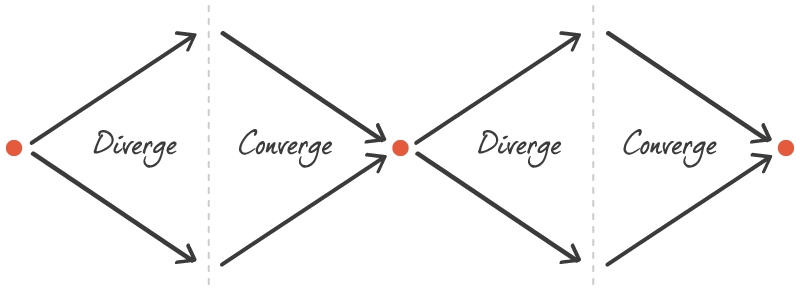

What is Converge / Diverge? The team's decision on whether to combine the best ideas into one prototype (converge) or develop competing ideas and test them against each other (diverge).
- Understand the difference between converging (all-in-one) and diverging (a rumble).
- Decide, as a class, which approach fits the time and evidence you have.
- Split the prototyping work clearly between team members.
- Plan testing that fits the chosen approach.
On this page
Context
Once the team has voted on the sketches, there is one more decision: converge or diverge.
- Converge (all-in-one): combine the winning ideas into a single prototype. Fast and focused; you test one direction and learn whether it works.
- Diverge (a "rumble"): develop two or three competing ideas and test them against each other with users. Slower, but you learn which approach is better.

Nielsen Norman Group's research supports trying more than one direction early: exploring several designs in parallel and combining the best of each tends to produce a better result than refining a single idea. But each extra prototype costs time, and every version needs its own round of testing. This decision is about that trade-off.
Goal / Learning Outcome
- Understand the difference between converging (all-in-one) and diverging (a rumble).
- Decide, as a class, which approach fits the time and evidence you have.
- Split the prototyping work clearly between team members.
- Plan testing that fits the chosen approach.
Main Exercise
- Review the winners (5 min). Look at the voted sketches and features together.
- Ask the key question (10 min). Do the winning ideas fit into one product, or do they pull in different directions? Is there real disagreement about which approach is best?
- Decide (5 min). As a class (or the Decider), choose:
- Converge if the ideas complement each other, or time is short.
- Diverge if two ideas genuinely compete and you can afford to test both.
- If you converge: use your journey map to break the flow into screens, and assign each screen to one person. Agree a shared style so the pieces fit together.
- If you diverge: name each version clearly (A and B), assign a team to each, and plan how users will see both. Each version needs its own five interviews, so keep each one to the MVP and allow extra testing time.
- Write it down. Record the decision, why you made it, and who builds what.
Template
| Decision | Why | Who builds what | Testing plan |
|---|---|---|---|
| Converge / Diverge |
Tips
- Don't diverge just to avoid an argument. Only rumble when both ideas have real evidence behind them.
- When you converge, protect the core idea: don't bolt on every feature that got a vote.
- Keep each prototype to the target flow, especially if you diverge.
Media
Checklist
☐ Reviewed the winning sketches
☐ Chose to converge or diverge, and recorded why
☐ Assigned every screen or version to someone
☐ Planned the testing for the chosen approach
Summary
Converge / diverge is the decision between building one combined prototype and testing competing ideas against each other. Converging is fast and focused; diverging teaches you which approach wins, at the cost of more time and testing.